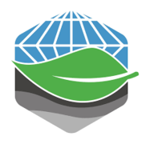

Education
AGH University of Krakow | AGH Krakow, Poland
PhD in Environmental Engineering | 2013 - 2019
Thesis: “Optimization of input settings of selected air pollution dispersion modeling sys- tems in near-field.”
Supervisor: prof. Marian Mazur
AGH University of Krakow | AGH Krakow, Poland
MSc in Environmental Engineering | 2012 - 2013
Thesis: “Air quality impact assessment of Industrial Plant of Thermic Waste Processing Technology in Kracow using mathematical dispersion model CALPUFF.”
Supervisor: Robert Oleniacz, PhD
AGH University of Krakow | AGH Krakow, Poland
Eng. in Environmental Engineering | 2008 - 2012
Thesis: “Emitter geometry optimization (in a select range)”
Supervisor: Robert Oleniacz, PhD

Employment
AGH University of Krakow | AGH Krakow, Poland
Faculty of Geo-Data Science, Geodesy and Environmental Engineering
Assistant Professor | 10/2019 - present
AGH University of Krakow | AGH Krakow, Poland
Faculty of Geo-Data Science, Geodesy and Environmental Engineering
Research Assistant | 10/2019 - present
Internships
Municipal Cleaning Company in Krakow | MPO, Krakow, Poland
Research internship | August 2019
Development of assumptions for research work on secondary dust emissions from roads. Recognition of existing street cleaning technologies. Optimization of the street cleaning process with relation to secondary dust pollutant unos.
Installations Sylwester Kocik | Kocik Tanow/Krakow, Poland
Traineeship | 2012 - 2013
Planning and implementation of sanitary installations (plumbing, heating, ventilation). Preparation of as-built documentation. Preparation of cost estimates. Supervision of technical staff.
Summer school of geoinformation | GEOGORCE, Gorce, Poland
Summer internship | may 2012
Courses and workshops in ArcGIS, Remote Sensing, ENVI and TOPR.
Environmental Protection Inspectorate in Krakow | WIOS, Krakow, Poland*
Traineeship | april 2011
Air quality monitoring, monitoring methods, maintenance and operation of measuring equipment, validation of measurement results.
Emipro limited liability company | EMIPRO, Krakow, Poland*
Traineeship July 2010
Poland Measurement of air pollution emissions, performance of measurements in industrial plants, performance of determinations in the laboratory, preparation of documentation.